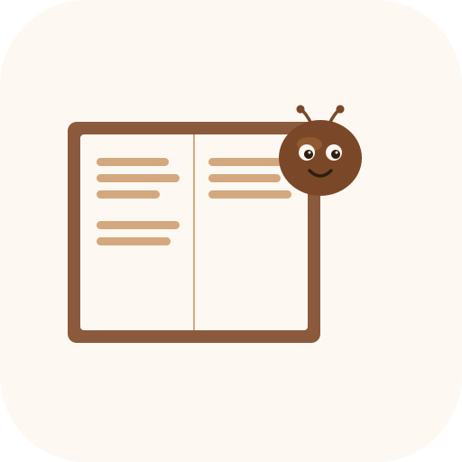
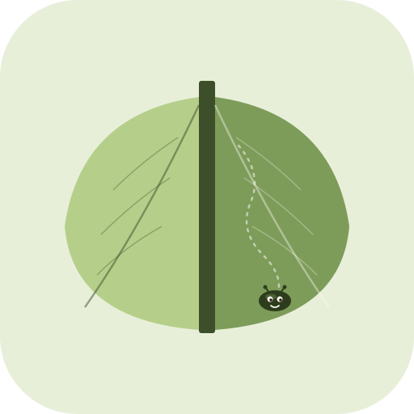

📚 小書蟲 LOGO 預覽
三個方向。先看大圖找感覺，再看小圖確認辨識度。
A. 月光開卷
暖棕底 + 米白彎月 + 攤開的書。最貼近現有 app 色調，「月選書」概念暗藏，溫文派。
192×192
96×96
48×48（PWA）
24×24（favicon）
深色背景下
B. 笑書蟲
米白底 + 棕色書本 + 書蟲探頭笑。對應「小書蟲」字面意義，可愛友善派。小尺寸辨識度最強。

192×192
96×96
48×48（PWA）
24×24（favicon）
深色背景下
C. 葉書
淡綠底 + 書脊中軸 + 兩片葉子當書頁。對應「閱讀＝心靈呼吸」概念，自然派、莫蘭迪感。配色脫離暖棕，個性最獨特。

192×192
96×96
48×48（PWA）
24×24（favicon）
深色背景下
💡 怎麼挑：手指遮住其他兩個，只看一個 30 秒。問自己「我願意這個圖示出現在 iPhone 主畫面、出現在每張分享圖卡上嗎？」
我的個人偏好排序：
B（笑書蟲）→ A（月光開卷）→ C（葉書）
理由：B 在小尺寸最辨識、最有個性；A 跟現有色調最一致；C 美但跟主 app 暖棕脫節。
告訴我選哪個（或想做哪個方向的修改），我就替換掉現在的 icon.svg。